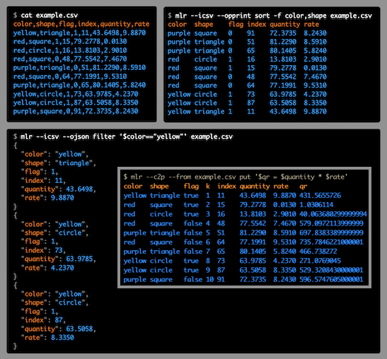

Introduction¶
Miller is a command-line tool for querying, shaping, and reformatting data files in various formats including CSV, TSV, JSON, and JSON Lines.
The big picture: Even well into the 21st century, our world is full of text-formatted data like CSV. Google CSV memes, for example. We need tooling to thrive in this world, nimbly manipulating data which is in CSVs. And we need tooling to move beyond CSV, to be able to pull data out and into other storage and processing systems. Miller is designed for both these goals.
In several senses, Miller is more than one tool:
Format conversion: You can convert CSV files to JSON, or vice versa, or pretty-print your data horizontally or vertically to make it easier to read.
Data manipulation: With a few keystrokes you can remove columns you don't care about -- or, make new ones.
Pre-processing/post-processing vs standalone use: You can use Miller to clean data files and put them into standard formats, perhaps in preparation to load them into a database or a hands-off data-processing pipeline. Or you can use it post-process and summary database-query output. As well, you can use Miller to explore and analyze your data interactively.
Compact verbs vs programming language: For low-keystroking you can do things like
mlr --csv sort -f name input.csv
mlr --json head -n 1 myfile.json
The sort, head, etc are called verbs. They're analogs of familiar command-line tools like sort, head, and so on -- but they're aware of name-indexed, multi-line file formats like CSV, TSV, and JSON. In addition, though, using Miller's put verb you can use programming-language statements for expressions like
mlr --csv put '$rate = $units / $seconds' input.csv
which allow you to succintly express your own logic.
Multiple domains: People use Miller for data analysis, data science, software engineering, devops/system-administration, journalism, scientific research, and more.
In the following you can see how CSV, TSV, tabular, JSON, and other file formats share a common theme which is lists of key-value-pairs. Miller embraces this common theme.
